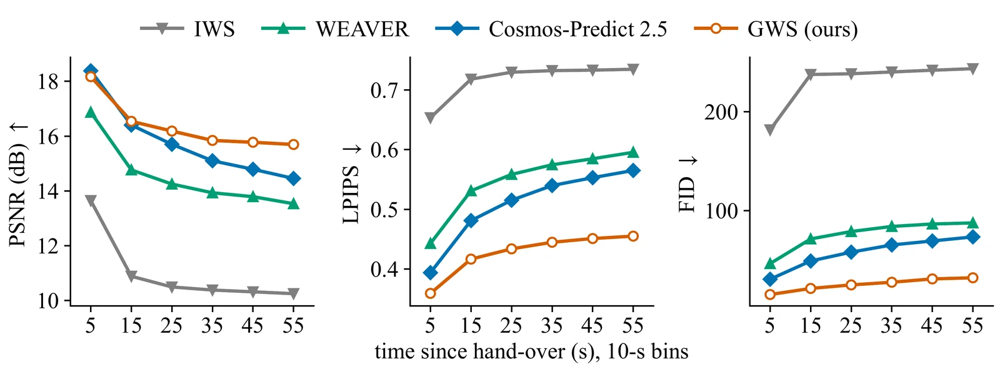
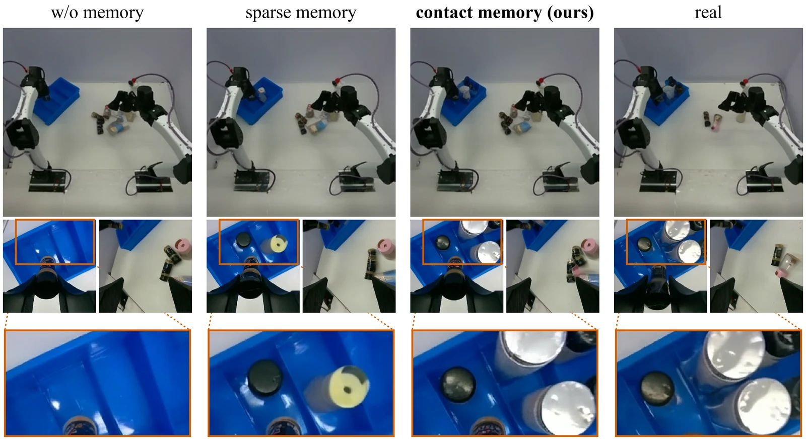

ICLR 2027 submission · under double-blind review
Generalizable World Simulator
Real-time, long-horizon interaction with diverse objects
Abstract
Interactive world models have shown great potential as simulators for robot manipulation, but existing models are either overfit to a single environment or unable to simulate long-horizon, contact-rich events. We present Generalizable World Simulator (GWS), a world model whose dynamics model is trained from scratch on a large robot-native teleoperation dataset, with no internet-video pretraining. By focusing on an architecture and learning recipe that fit robot-native data, we obtain a world model that is orders of magnitude smaller than state-of-the-art video generation models, yet shows a significantly better understanding of contact and causality, and runs at 10 FPS on a commercial GPU. Experimentally, GWS significantly outperforms previous state-of-the-art methods across future prediction, policy evaluation, and mixed-data co-training, and we demonstrate several ways it can be used in a robotics setting.
Method
GWS is a latent flow-matching world model: a tokenizer encodes each camera view into a compact latent, and a causal transformer predicts the next latent from the action, a window of recent latents and a few long-term memory frames. During rollout its own predictions become its history, so one network simulates recorded actions, a policy or a human operator.
1Unit-sphere tokenizer
Each 256×256 view becomes a 16×16 grid of 16-dimensional latents projected onto the unit sphere; a flow-matching decoder reconstructs the view. Predicted latents are re-normalized before decoding and before reuse as context, which removes the radial drift that otherwise compounds over long rollouts. Encoder and decoder are fine-tuned jointly from a public image tokenizer, then frozen for dynamics training.
2Contact-based memory
The visual history is a 5-s window of recent latents plus eight long-term memory frames. An auxiliary head predicts one contact bit per arm; a predicted contact transition (a grasp or a release) writes that frame into a keyframe bank. Slots hold an anchor frame and keyframes retrieved by end-effector-pose similarity and recency, so a placed object is remembered when the camera looks back at it. At inference the model uses its own contact predictions.
3Streaming transformer
A 1.9B-parameter causal transformer (28 blocks, hidden size 2048) applies spatial attention within each frame and causal temporal attention across frames, with a few joint spatio-temporal blocks. A learned sink frame, never noised or evicted, is a persistent attention target. Sixteen in-flight frames at staggered noise levels are denoised in parallel over a rolling KV cache, so compute per step is constant in rollout length and the simulator runs at 10 Hz.
Training data: a large internal bimanual teleoperation dataset (two 6-DoF arms with parallel grippers, 14-D state and action, three cameras) at 10 Hz and 256×256 per view. The dynamics model is trained from scratch on 256 GPUs for six days at batch size 2,048.
Results
Five experiments, in order: rollouts on diverse objects, a comparison against baselines, policy evaluation inside the simulator, co-training with simulated demonstrations, and a memory ablation.
Interaction with diverse objects
A single model produces stable 30-s rollouts across rigid objects, deformables and cloth, food, tools and containers. Rollouts stay coherent on held-out episodes and on unseen task compositions.
Objects keep their identity and position over 30 s; every frame is predicted.
Comparison against baselines
All models are trained on the same split of the public ABC dataset, seeded with 15 s of real frames and rolled out for 60 s under the recorded actions. Averaged over the minute, GWS reaches 16.4 dB PSNR against 15.8 for Cosmos-Predict 2.5, 14.5 for WEAVER and 11.0 for IWS.
Writing a sentence on a whiteboard · 60-s rollout

Policy evaluation inside the simulator
Can GWS stand in for the real robot when evaluating a policy? We run the same vision-language-action policies on three tasks, 32 episodes each on the real robot and inside GWS, and hand-label task progress.
Co-training with demonstrations collected inside GWS
Because GWS runs in real time from leader arms, an operator can record demonstrations inside the simulator without a robot. We fine-tune the same policy on 75 real demonstrations, 75 simulated ones, or both, and test it on the real robot.
Ablation: what the contact-based memory preserves
Three models share one architecture and differ only in memory selection: none, keyframes at a fixed 1-s stride, or our contact-based memory. We test on a task where objects leave and re-enter view.
